The Toyota Supra is a sports car and grand tourer manufactured by the Toyota Motor Corporation since 1978. It is derived from the Toyota Celica and is often mistaken for the Supra. It is assembled at the Tahara plant in Aichi and the Motomachi plant in Toyota City.
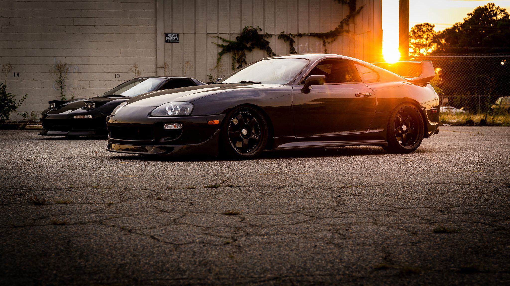The Supra was based on the Toyota Celica liftback, but was longer by 129.5 mm (5.10 in). It was offered with either a 2.0 L or 82 kW 2.6-liter 12-valve SOHC inline-six engine, with electronic fuel injection. It was first exported outside Japan in January 1979, with a 110 hp (82 kW; 112 PS) 2.6-liter 12-valve SOHC engine.
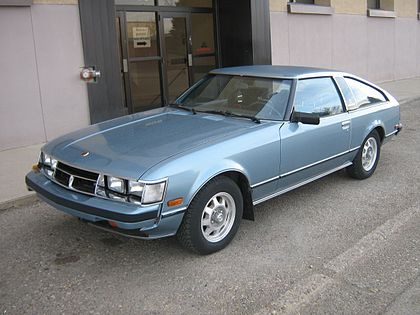Toyota redesigned the Celica Supra and entire Celica lineup for the 1982 model year, with key differences such as the design of the front end, inline-six engine, and wider wheelbase. The Soarer coupe was offered in Japan, while the Celica Camry was realigned with the Chaser in North America.
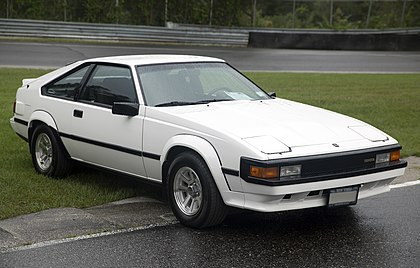The Celica and Supra were separated in 1986, with the Celica having a front-wheel drive layout and the Supra having a rear-wheel-drive layout. The engine was upgraded to a more powerful 2,954 cc (3.0 L) inline-six engine, with a turbocharged version added in 1987.
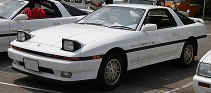The A80 program began in 1989 and was approved and frozen for production in late 1990. Pre-production of the test models started in December 1992 with 20 units made, and official mass production began in April 1993.
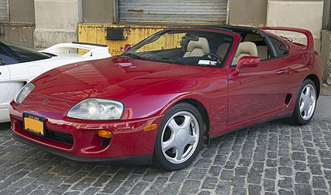The fifth-generation Toyota Supra was released in 2019 and was developed in partnership with BMW. It is manufactured at the Magna Steyr plant in Graz, Austria and has seven color options and new driving modes called Hairpin+.
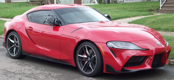 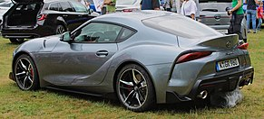 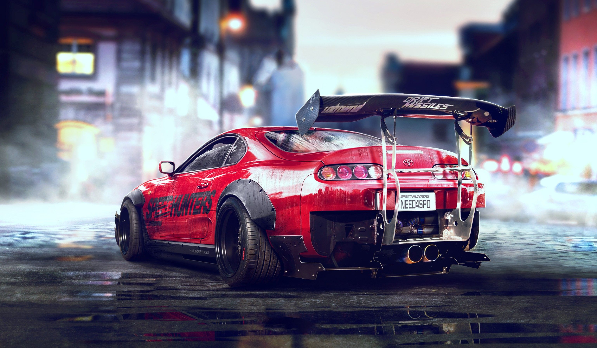
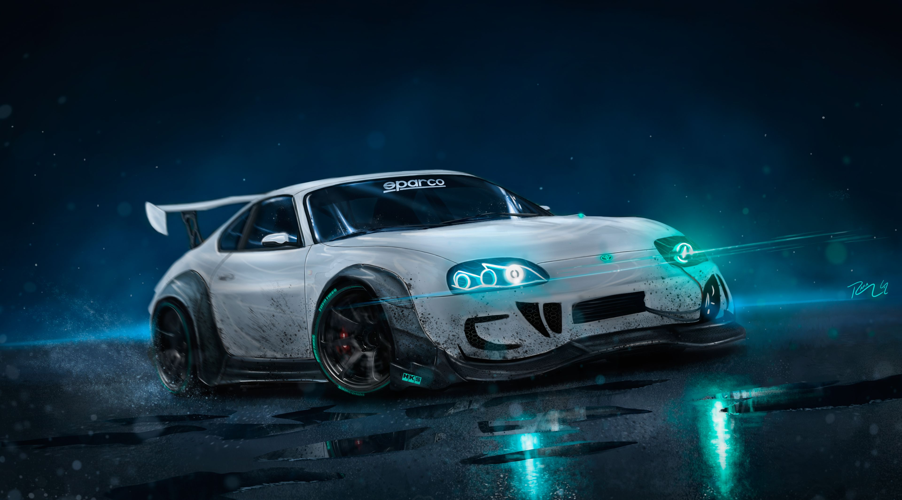
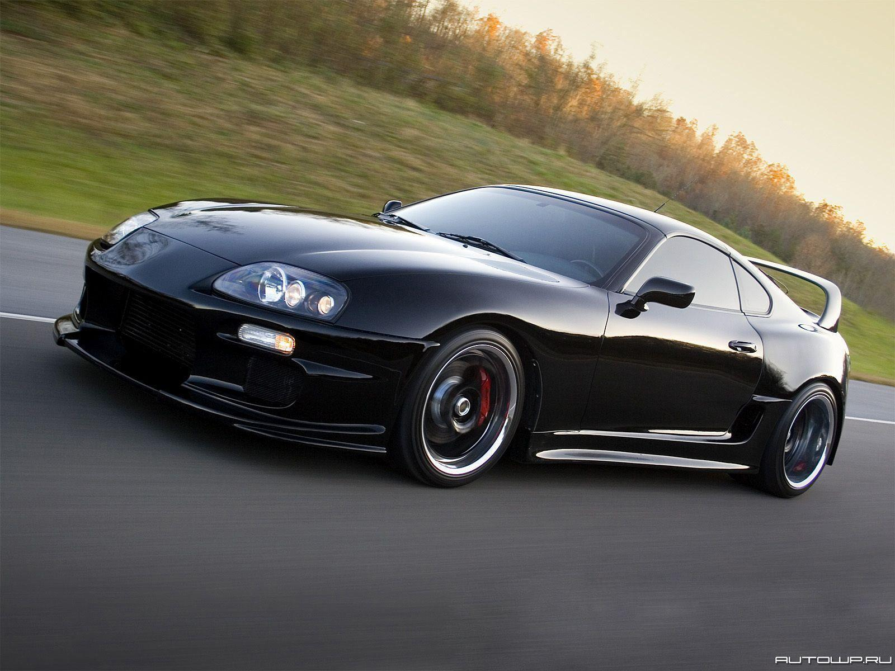
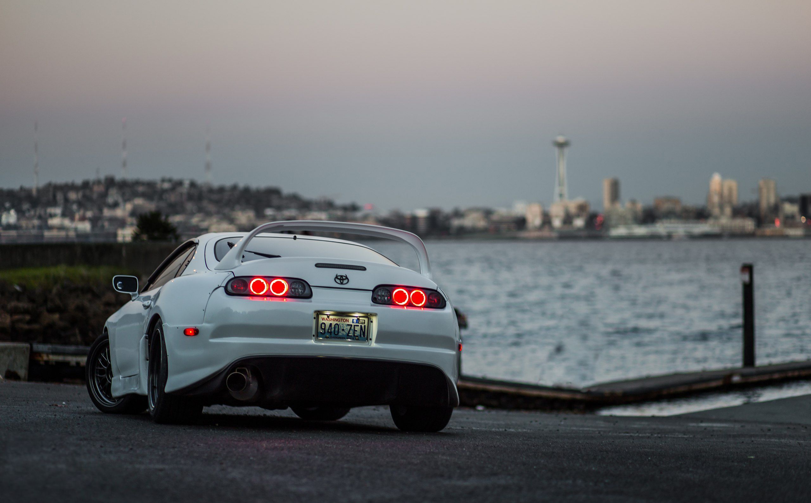
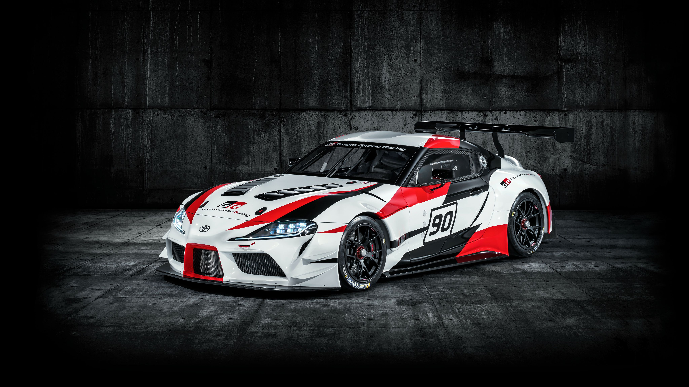
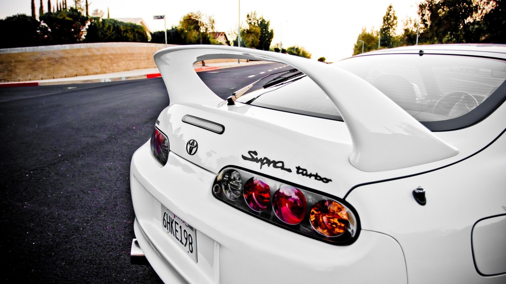
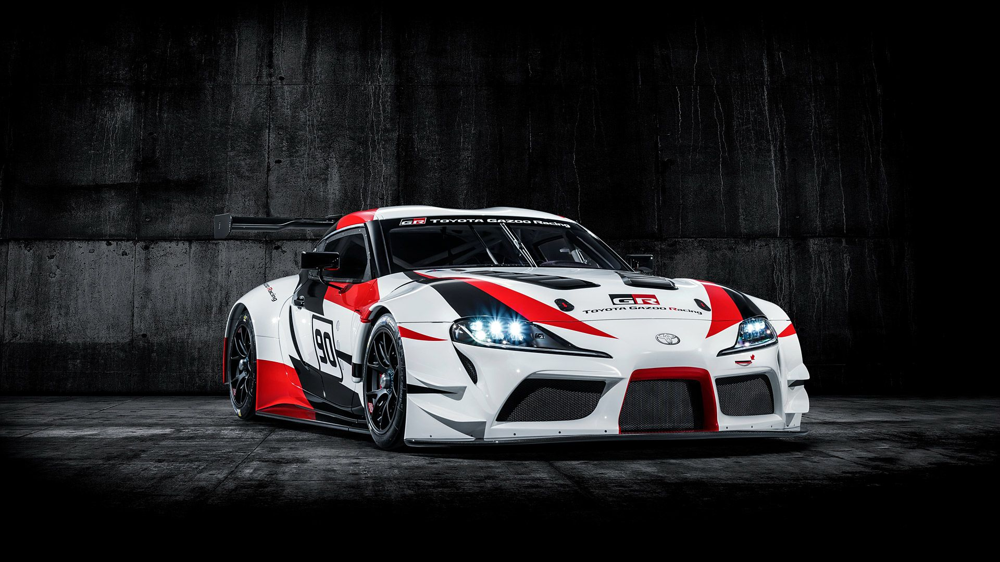
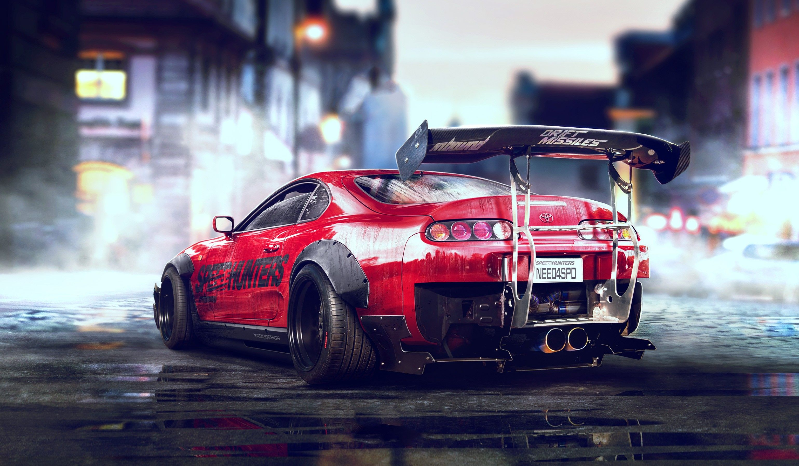
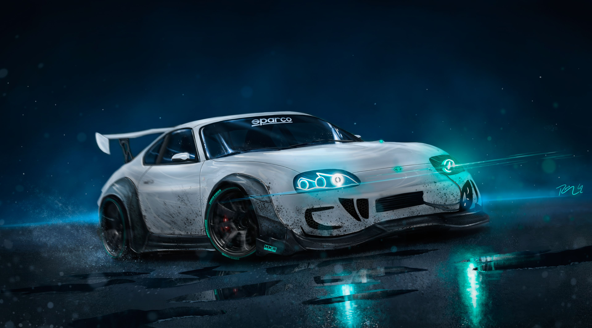
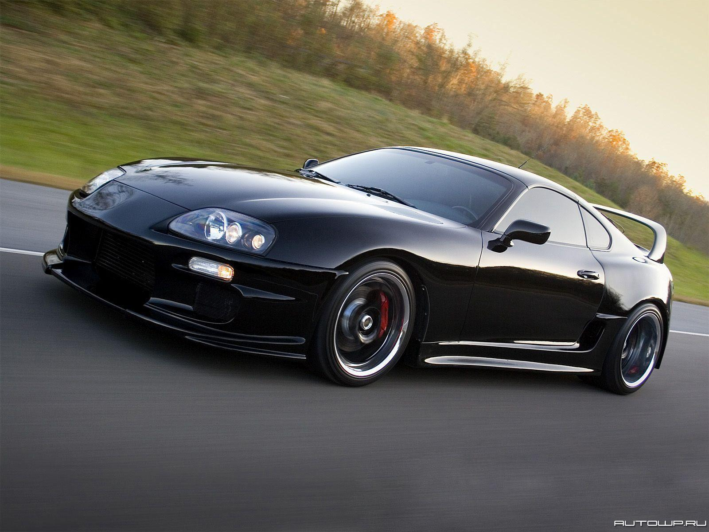
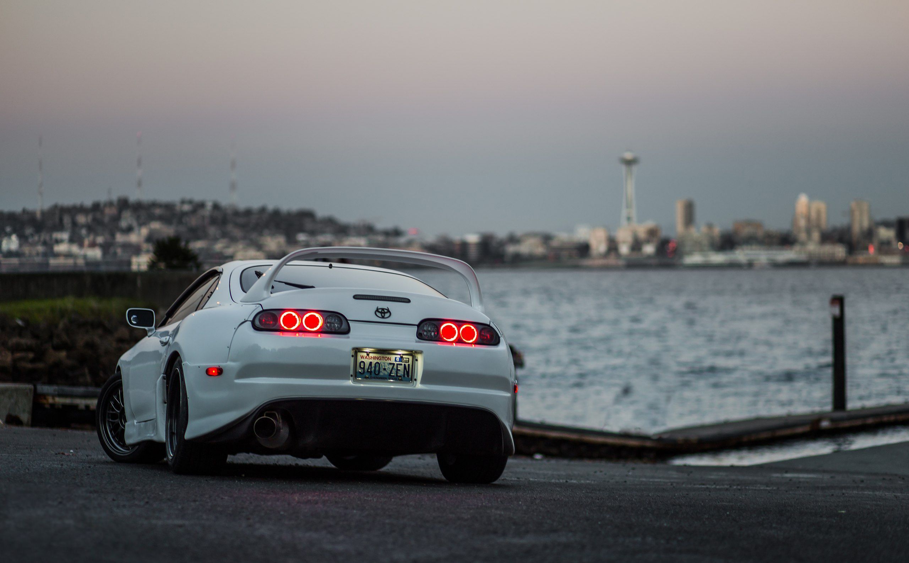
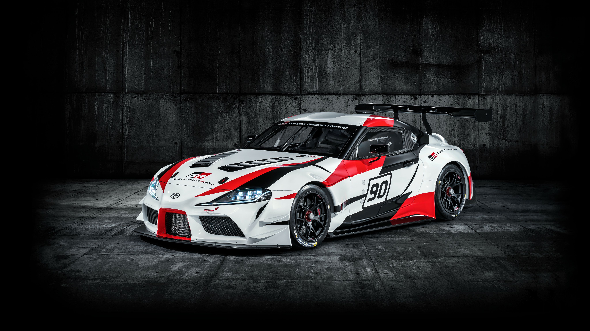
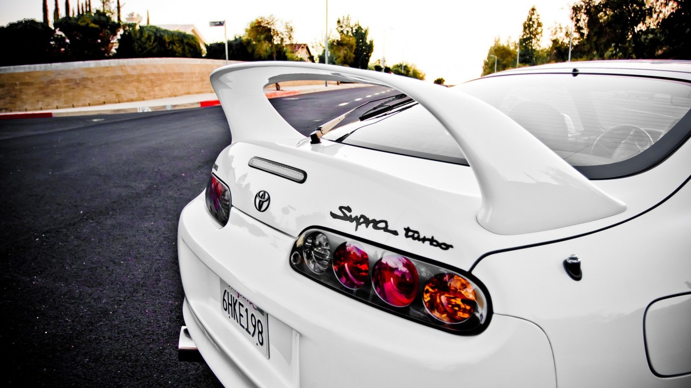
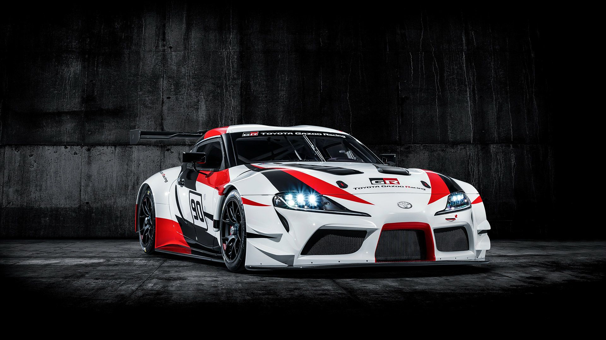